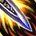
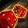
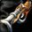
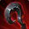
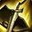

狂徒贼 PvP 判断训练器
狂徒问的是——我现在有多强？
敏锐没有持续压力，靠攒一个窗口一次结账。狂徒相反——它有持续压力、机动性最强、防御最厚，能一直待在场上。
代价是：你的强度不恒定。 伤害底座是
所以狂徒的判断核心不是"该不该开"，是"我现在这个状态该压还是该耗"。
过去狂徒可以靠不安之刃（Restless Blades）把
结果：你的命现在挂在机动性上，不挂在消失上。
还有两条：移除了 Cold Blood 和 Float Like a Butterfly；
过去可以同时挂多个骰面。现在是四选一，一次只有一个。 这让"骰到什么"的权重比以前高得多——你不再能靠数量堆出稳定强度。
英雄天赋 Fatebound（top50 三对三 8/8 全用）的机制：每次放终结技抛一枚
它全自动，不干扰循环，也不需要你规划。 写在这里是为了让你别去管它——有人会因为想凑硬币而改变终结技节奏，那是纯亏。
该压还是该耗？勾一下就知道
敏锐数的是对面还剩几张牌，狂徒数的是我现在有多强、能不能留下来。
三个时钟
三个钟与敏锐对称，但读法完全不同。

骰子时钟狂徒独有，也最容易被忘▸本版一次只有一个骰面，所以"什么时候重骰"变成了真判断，不是随手按。

增益时钟眉心 + 切割，两条线不能断▸这两条断线的时候，你就是个弱化版的自己。狂徒最常见的输出问题不是循环打错，是让底座掉线了还在硬打。

回家时钟本版消失不再快速转好▸12.0 拿掉了「不安之刃缩减消失冷却」——你不能再靠消失频繁重置了。
本版定盘（top50 三对三实测）
Fatebound 在竞技场是压倒性选择（8/8），诡术师是 0。它全自动，不需要你规划——见骨架页第四条。

PvP 天赋：两必带 + 一个机动格卸除武装 + 烟雾弹 都是 8/8▸第三格：先发制人（Preemptive Maneuver） 5/8 是主流；